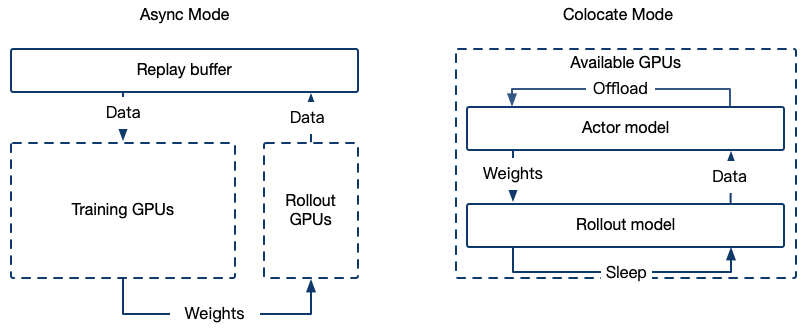

GRPO
GRPOTrainer underwent a code refactoring in ms-swift3.5. If you are using a swift version < 3.5, please refer to the stable documentation.
GRPO (Group Relative Policy Optimization) leverages intra-group relative advantage calculations to replace the independent value model in the PPO algorithm and directly incorporates KL divergence penalties into the loss function to improve training stability.
Algorithm Overview
GRPO Objective Function is defined as $ {\scriptstyle \begin{aligned} \mathcal{J}{G R P O}(\theta) & =\mathbb{E}{\left[q \sim P(Q),\left{o_i\right}{i=1}^G \sim \pi{\theta_{o l d}}(O \mid q)\right]} \ & \frac{1}{G} \sum_{i=1}^G \frac{1}{\left|o_i\right|} \sum_{t=1}^{\left|o_i\right|}\left{\min \left[\frac{\pi_\theta\left(o_{i, t} \mid q, o_{i,<t}\right)}{\pi_{\theta_{o l d}}\left(o_{i, t} \mid q, o_{i,<t}\right)} \hat{A}{i, t}, \operatorname{clip}\left(\frac{\pi\theta\left(o_{i, t} \mid q, o_{i,<t}\right)}{\pi_{\theta_{o l d}}\left(o_{i, t} \mid q, o_{i,<t}\right)}, 1-\varepsilon, 1+\varepsilon\right) \hat{A}{i, t}\right]-\beta \mathbb{D}{K L}\left[\pi_\theta| | \pi_{r e f}\right]\right} \end{aligned} } $
The advantage function is defined as
$ \hat{A}{i,t} = \frac{R_i - \text{mean}({R_j}{j=1}^G)}{\text{std}({R_j}_{j=1}^G)} $
GRPO Algorithm Pseudocode
# ========== 1. Rollout Generation Phase ==========
prompt = "Question: Which is bigger? 9.11 or 9.9?"
# Generate multiple completions through parallel sampling
completions = rollout_function(
model=current_policy_model,
prompt=prompt,
num_generations=8, # Hyperparameter: number of samples per prompt
temperature=1.0 # Hyperparameter: sampling diversity
)
"""
completions = [
(completion 1) "The larger number is 9.11...",
(completion 2) "9.9 is bigger than...",
...
(completion 8) "After calculation, 9.11..."
]
"""
# ========== 2. Reward Calculation Phase ==========
# Evaluate generated completions using reward model
rewards = reward_function(
completions=completions,
ground_truth="9.11" # Expected correct answer
)
"""
rewards = [
(reward 1) 1.0, # Correct answer
(reward 2) 0.0, # Incorrect
...
(reward 8) 1.0 # Correct
]
"""
# Normalize rewards to advantages
rewards_mean = mean(rewards) # μ = 0.5
rewards_std = std(rewards) # σ = 0.25
advantages = (rewards - rewards_mean) / (rewards_std + 1e-8) # Standardization
"""
advantages = [
(advantage 1) 2.0, # (1.0 - 0.5)/0.25
(advantage 2) -2.0,
...
(advantage 8) 2.0
]
"""
# ========== 3. Policy Optimization Phase ==========
# Get token-level log probabilities from different models
current_logps = get_per_token_logps(current_policy_model, prompt, completions) # π_θ
old_logps = get_per_token_logps(old_policy_model, prompt, completions) # π_θ_old
ref_logps = get_per_token_logps(reference_model, prompt, completions) # π_ref
# PPO Clipped Objective
is_ratio = exp(current_logps - old_logps) # Importance sampling ratio: e^(π_θ - π_θ_old)
clipped_ratio = clip(is_ratio, 1-ε, 1+ε) # ε=0.2 typically
# Policy gradient term (dual form)
policy_loss = -mean(
minimum(is_ratio * advantages, # Unclipped objective
clipped_ratio * advantages) # Clipped objective
)
# KL Divergence Penalty (K3 estimator)
# KL(π_θ||π_ref) ≈ e^(logπ_ref - logπ_θ) - (logπ_ref - logπ_θ) - 1
kl_penalty = beta * mean(
exp(ref_logps - current_logps) -
(ref_logps - current_logps) - 1
)
# Total Loss = Policy Loss + KL Penalty
total_loss = policy_loss + kl_penalty
# ========== 4. Update Rule ==========
# Apply gradient descent to minimize total_loss
optimizer.zero_grad()
total_loss.backward()
optimizer.step()
For training script examples, refer to examples.
For GRPO parameters, refer to the documentation
Cluster Support

The GRPO training framework supports integration with high-performance inference engines (e.g., vLLM) to accelerate the sampling process, offering the following two deployment modes:
1. Colocate (Internal) Mode
Training and inference share GPU resources, with the inference service launched internally within the Trainer.
Startup parameters
--use_vllm true \
--vllm_mode colocate
Memory Optimization Solutions in Colocate Mode
When running in Colocate mode, out-of-memory (OOM) issues may frequently occur. Below are several effective memory optimization methods and parameter configurations:
Reduce the vllm_gpu_memory_utilization parameter.
During the training phase, release the GPU memory occupied by vLLM:
--sleep_level 1
During the vLLM inference phase, release the GPU memory occupied by the model and optimizer:
--offload_optimizer true \
--offload_model true \
Use Tensor Parallelism in vLLM:
--vllm_tensor_parallel_size [tp_size]
Gather model weights in batches (when synchronizing vLLM weights under zero3):
--move_model_batches [批次数量]
Store Megatron exported HF format weights for vLLM updates in CPU main memory to reduce GPU memory usage:
--offload_bridge true
2. Async(External) Mode
Training and inference resources are separated, with a dedicated inference server deployed.
Use the swift rollout command to deploy the vLLM server (currently only supports vLLM backend):
CUDA_VISIBLE_DEVICES=0 \
swift rollout \
--model Qwen/Qwen2.5-VL-7B-Instruct \
--vllm_tensor_parallel_size 2 \
--vllm_data_parallel_size 1
CUDA_VISIBLE_DEVICES=0,1 \
swift rollout \
--model Qwen/Qwen2.5-VL-7B-Instruct \
--vllm_tensor_parallel_size 2 \
--vllm_data_parallel_size 1
CUDA_VISIBLE_DEVICES=0,1,2,3 \
swift rollout \
--model Qwen/Qwen2.5-VL-7B-Instruct \
--vllm_tensor_parallel_size 2 \
--vllm_data_parallel_size 2
For more rollout parameters, refer to the vllm arguments and rollout arguments
Note: When set use_async_engine, enabling only DP (Data Parallelism) may cause errors. Related issue. If errors occur, try enabling both TP (Tensor Parallelism) and DP or upgrading vLLM.
To configure the external vLLM server during training, use the following parameters:
--use_vllm true \
--vllm_mode server \
--vllm_server_host <server_IP> \
--vllm_server_port <service_port> \
--vllm_server_timeout <timeout> \
Weight-Sync Acceleration
Swift 3.10 optimizes weight synchronization, and setting the following parameters can further improve the weight synchronization speed for LoRA training:
# rollout(server mode)
swift rollout \
--vllm_enable_lora true \
--vllm_max_lora_rank xxx # match the lora_rank in the training script
...
# grpo(colocate mode)
swift rlhf \
--rlhf_type grpo \
--vllm_mode colocate \
--vllm_enable_lora true \
...
Note: This optimization cannot be used in the following cases:
Training the ViT layers of multimodal models (freeze_vit set to false)
MoE models
For implementation details, please refer to the PR
logged metrics
completions/mean_length: The average length of generated completions.
completions/min_length: The minimum length among generated completions.
completions/max_length: The maximum length among generated completions.
completions/clipped_ratio: The proportion of completions that were truncated due to length limits.
reward/{reward_func_name}/mean: The average reward value for a specific reward function.
reward/{reward_func_name}/std: The standard deviation of the reward for a specific reward function.
Note: These two metrics are calculated across all completions.
reward: The overall average reward after applying reward_weights.
reward_std: The standard deviation of the overall reward within each batch after applying reward_weights.
Note: These two metrics are first computed within each group and then averaged (for mean/std) across groups.
frac_reward_zero_std: The proportion of samples in a generation batch where the reward standard deviation is zero, meaning there is almost no diversity in answers for that prompt (i.e., the rewards of all completions are same).
kl: The average KL divergence between the model and the reference model on completions. This is logged only if beta is nonzero.
clip_ratio/region_mean: The average proportion of tokens clipped by the CLIP operator across different sentences.
clip_ratio/low_mean: The average proportion of tokens clipped by the lower CLIP bound across different sentences.
clip_ratio/low_min: The minimum proportion of tokens clipped by the lower CLIP bound across different sentences.
clip_ratio/high_mean: The average proportion of tokens clipped by the upper CLIP bound across different sentences.
clip_ratio/high_max: The maximum proportion of tokens clipped by the upper CLIP bound across different sentences.
Note: If
overlong_filteris enabled, the kl and clip_ratio metrics will exclude overlength samples.
If the log_entropy parameter is set, additional entropy-related metrics will be logged, including:
entropy/mean: the average entropy across different sentences
entropy/max: the maximum entropy among different sentences
entropy/min: the minimum entropy among different sentences
Note: Here, sentence entropy refers to the mean entropy of tokens in each completion.
If top_entropy_quantile is set to a value smaller than 1.0, the entropy threshold value will also be recorded:
entropy/threshold: Tokens with entropy below this value will be excluded from the loss calculation.
Training-inference consistency metrics, prefixed with rollout_correction (ms-swift>=3.11), requires setting log_rollout_offpolicy_metrics=true or rollout_importance_sampling_mode:
kl/k3_kl: KL divergence between training policy and rollout policy (direct estimator / K3 estimator)training_ppl/rollout_ppl: Perplexity of training policy and rollout policylog_ppl_diff: Log PPL difference, reflects the degree of distribution shiftppl_ratio: PPL ratiochi2_token/chi2_seq: Token/Sequence-level χ² divergence
IS correction metrics (requires setting rollout_importance_sampling_mode):
is_weight_mean: Average importance sampling weightess: Effective Sample Sizeclipped_frac: Fraction of samples that were truncated or masked
For detailed explanation of training-inference consistency metrics, please refer to Training-Inference-Mismatch
If log_completions is set, the training dynamics will be saved in the output directory, including:
step: The training step at the time of logging.
prompt: The model input.
completion: The model's sampled answer.
{reward_func_name}: The specific reward(s).
entropy: The average token entropy (recorded if
log_entropyis set).
Setting report_to wandb/swanlab will send training dynamics table to the respective platform.
If you want to log extra columns in the Table, populate the metrics_to_gather dictionary inside GRPOTrainer._generate_and_score_completions.
The trainer automatically detects and logs the following keys:
image: image inputs for vision models(wandb only).
solution: the solution column from the dataset.
FAQ
1. Loss Equals Zero / Approaches Zero / Is Negative During Training
This is normal behavior. For reference, see issue.
2. num_generations / Batch Size Related
In GRPO, the batch size is measured in terms of completions (i.e., model-generated outputs). For example, setting per_device_train_batch_size=8 means that each GPU processes 8 completions for loss calculation during training.
During the training phase, the total effective batch size in a full gradient accumulation step equals:
effective_batch_size = num_processes * per_device_train_batch_size * gradient_accumulation_steps
During the sampling phase, the total batch size (completion-level) depends on the following:
If generation_batch_size is set, the total equals generation_batch_size.
If steps_per_generation is set, the total equals steps_per_generation * effective_batch_size.
By default, it equals the effective batch size: num_processes * per_device_train_batch_size * gradient_accumulation_steps. During evaluation, the number of completions equals:
num_processes * per_device_eval_batch_size
The parameter num_generations must be divisible by the total batch size used in sampling and evaluation to ensure even distribution across devices.
Example
num_processes = 8
per_device_train_batch_size = 4
gradient_accumulation_steps = 8
generation_batch_size = 512
num_generations = 64
Total prompts needed for sampling: 512 / 64 = 8
Generate 512 responses from the model per sampling step
Model update batch size: 8 * 4 * 8 = 256
3. Why did KL result in NaN?
With overlong_filter enabled, all completions on a certain GPU were truncated.
4. How is the training steps calculated?
Refer to issue.
5. Why is the clip ratio always 0?
The core purpose of the clip mechanism is to limit the magnitude of policy updates to prevent policy performance collapse due to excessively large updates (i.e., a drastic decline in performance after policy updates). The specific formula for the clip operation is as follows:
$$ L_{\text{CLIP}}(\theta) = \mathbb{E}{t} \left[ \min\left(r{t}(\theta) \hat{A}{t}, \text{clip}(r{t}(\theta), 1 - \epsilon, 1 + \epsilon) \hat{A}_{t} \right) \right] $$
Where: $r_{t}(\theta) = \frac{\pi_{\theta}(a_{t} \mid s_{t})}{\pi_{\text{old}}(a_{t} \mid s_{t})}$ is the importance sampling ratio, which measures the difference between the new and old policy. $\hat{A}{t}$ is the advantage function, representing the relative return of the action. $\epsilon$ is used to limit the deviation range of $r{t}(\theta)$.
In the on-policy training process, since each update uses data generated by the latest policy, the new and old policies are the same, i.e., $\pi_{\theta} = \pi_{\text{old}}$.
Thus, the importance sampling ratio is always 1, and the clip operation does not take effect.
The algorithm becomes off-policy (near-on-policy) under the following parameter settings:
num_iterations > 1
gradient_accumulation_steps % steps_per_generation != 0
Refer to issue.
6. Why is there a validation process even when val_dataset is not set, and how can I disable it?
When val_dataset is not explicitly passed, the split_dataset_ratio parameter is responsible for splitting part of the dataset into a validation dataset, which defaults to splitting 1% of the data. (In "ms-swift>=3.6", the default value of split_dataset_ratio will be changed from 0.01 to 0.)
To disable the validation process, set --split_dataset_ratio 0.
7. How to set the training mini-batch size
In GRPO training, we can configure mini-batch updates in the following two ways:
Configuration options:
Set
generation_batch_sizeto be an integer multiple of the training global batch size.Or set
steps_per_generationto be an integer multiple ofgradient_accumulation_steps.
Typical configuration example: When configured with: steps_per_generation = 16 gradient_accumulation_steps = 8
The results from one rollout will be split into two mini-batch updates.
8. Difference between swift deploy and swift rollout
swift deploy is primarily used for model deployment and inference. It supports various engines such as PT, vLLM, and SGLang, and is compatible with streaming inference as well as the OpenAI API format.
swift rollout, on the other hand, is dedicated to GRPO rollout acceleration. Currently, it only supports the vLLM engine and comes with built-in automatic weight synchronization.
9. How to disable the KL loss term
Set the parameter --beta 0 to disable KL loss calculation. The reference model (ref model) will not be loaded in this case.
RL WeChat Group